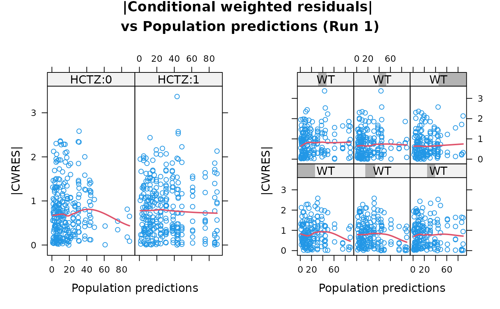

Absolute value of the conditional weighted residuals vs. population predictions, conditioned on covariates, for Xpose 4
Source:R/absval.cwres.vs.pred.by.cov.R
absval.cwres.vs.pred.by.cov.RdThis is a plot of absolute population conditional weighted residuals
(|CWRES|) vs population predictions (PRED) conditioned by covariates, a
specific function in Xpose 4. It is a wrapper encapsulating arguments to the
xpose.plot.default function. Most of the options take their default
values from xpose.data object but may be overridden by supplying them as
arguments.
Usage
absval.cwres.vs.pred.by.cov(
object,
covs = "Default",
ylb = "|CWRES|",
type = "p",
smooth = TRUE,
idsdir = "up",
main = "Default",
...
)Arguments
- object
An xpose.data object.
- covs
A vector of covariates to use in the plot. If "Default" the the covariates defined in
object@Prefs@Xvardef$Covariatesare used.- ylb
A string giving the label for the y-axis.
NULLif none.- type
Type of plot. The default is points only ("p"), but lines ("l") and both ("b") are also available.
- smooth
Logical value indicating whether an x-y smooth should be superimposed. The default is TRUE.
- idsdir
Direction for displaying point labels. The default is "up", since we are displaying absolute values.
- main
The title of the plot. If
"Default"then a default title is plotted. Otherwise the value should be a string like"my title"orNULLfor no plot title.- ...
Other arguments passed to
link{xpose.plot.default}.
Details
Each of the covariates in the Xpose data object, as specified in
object@Prefs@Xvardef$Covariates, is evaluated in turn, creating a
stack of plots.
The main argument is not supported owing to the multiple plots
generated by the function.
Conditional weighted residuals (CWRES) require some extra steps to
calculate. See compute.cwres for details.
A wide array of extra options controlling xyplots are available. See
xpose.plot.default for details.
See also
absval.cwres.vs.pred,
xpose.plot.default, xpose.panel.default,
xyplot, xpose.prefs-class,
compute.cwres, xpose.data-class
Other specific functions:
absval.cwres.vs.cov.bw(),
absval.cwres.vs.pred(),
absval.iwres.cwres.vs.ipred.pred(),
absval.iwres.vs.cov.bw(),
absval.iwres.vs.idv(),
absval.iwres.vs.ipred(),
absval.iwres.vs.ipred.by.cov(),
absval.iwres.vs.pred(),
absval.wres.vs.cov.bw(),
absval.wres.vs.idv(),
absval.wres.vs.pred(),
absval.wres.vs.pred.by.cov(),
absval_delta_vs_cov_model_comp,
addit.gof(),
autocorr.cwres(),
autocorr.iwres(),
autocorr.wres(),
basic.gof(),
basic.model.comp(),
cat.dv.vs.idv.sb(),
cat.pc(),
cov.splom(),
cwres.dist.hist(),
cwres.dist.qq(),
cwres.vs.cov(),
cwres.vs.idv(),
cwres.vs.idv.bw(),
cwres.vs.pred(),
cwres.vs.pred.bw(),
cwres.wres.vs.idv(),
cwres.wres.vs.pred(),
dOFV.vs.cov(),
dOFV.vs.id(),
dOFV1.vs.dOFV2(),
data.checkout(),
dv.preds.vs.idv(),
dv.vs.idv(),
dv.vs.ipred(),
dv.vs.ipred.by.cov(),
dv.vs.ipred.by.idv(),
dv.vs.pred(),
dv.vs.pred.by.cov(),
dv.vs.pred.by.idv(),
dv.vs.pred.ipred(),
gof(),
ind.plots(),
ind.plots.cwres.hist(),
ind.plots.cwres.qq(),
ipred.vs.idv(),
iwres.dist.hist(),
iwres.dist.qq(),
iwres.vs.idv(),
kaplan.plot(),
par_cov_hist,
par_cov_qq,
parm.vs.cov(),
parm.vs.parm(),
pred.vs.idv(),
ranpar.vs.cov(),
runsum(),
wres.dist.hist(),
wres.dist.qq(),
wres.vs.idv(),
wres.vs.idv.bw(),
wres.vs.pred(),
wres.vs.pred.bw(),
xpose.VPC(),
xpose.VPC.both(),
xpose.VPC.categorical(),
xpose4-package
Examples
absval.cwres.vs.pred.by.cov(simpraz.xpdb, covs=c("HCTZ","WT"), max.plots.per.page=2)
